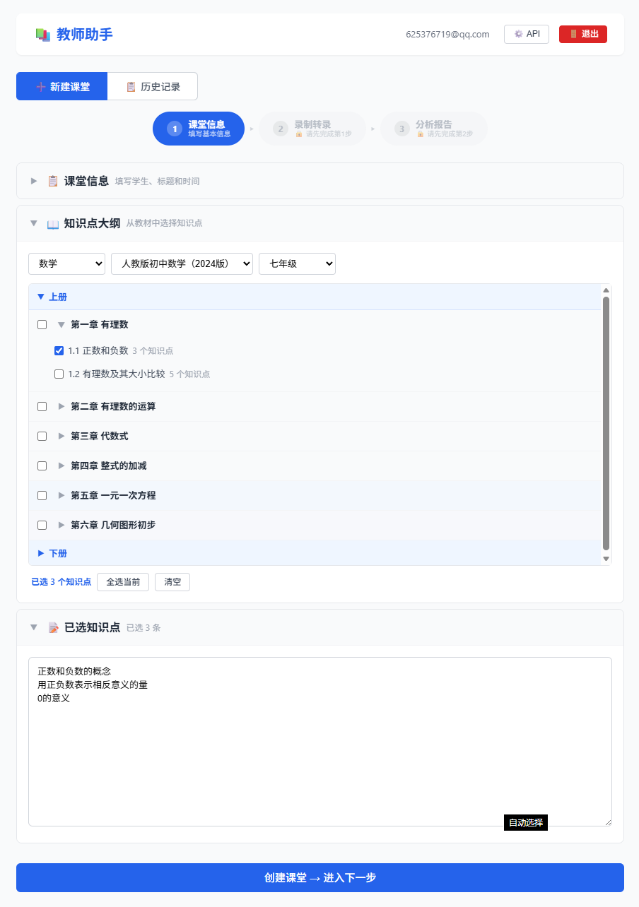
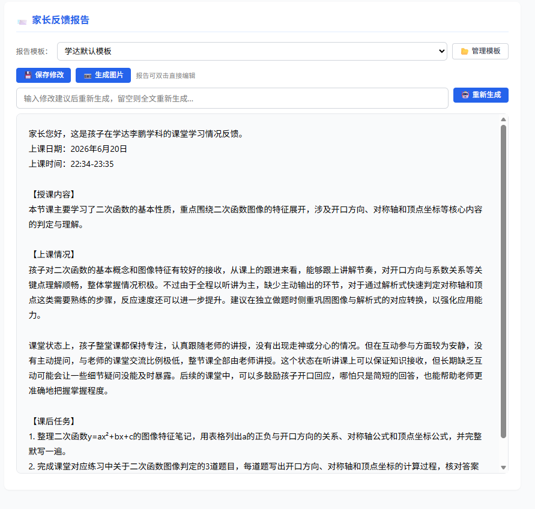

录制课堂 → 自动转录 → 智能分析 → 一键生成
省下写报告的时间，把精力留给真正重要的——教学
从课堂录音到专业报告，一气呵成
上传音频文件或实时录制
支持 MP3 / WAV / M4A
CPU / GPU / API 三引擎
45 分钟音频约 12 分钟
知识点覆盖 + 掌握程度
课堂互动 + 巩固建议
一键输出家长报告
支持自定义模板 + AI 修订
每位老师都值得拥有的 AI 教学助手
支持 DeepSeek、OpenAI、Claude、Groq、Ollama 等任意厂商。API Key 你自己保管，系统不预设、不上传。
基于 Whisper.cpp，支持 CPU / GPU 两种本地引擎。无需联网，课堂数据不外传，保护学生隐私。
内置 4 科 2171 个知识点（数学 / 历史 / 地理 / 科学），六级结构精准定位学生掌握情况。
上传你自己的 .txt 模板，支持 8 个占位符变量。不同科目、不同年级，灵活定制。
用自然语言告诉 AI 怎么改——"语气再温和一点""多强调数学进步"——AI 立刻帮你润色。
所有数据（课堂录音、转录文字、分析报告）存在你的电脑上。不上传云端，隐私安全可控。
简洁直观的操作界面，三步导航一目了然


选择适合你的下载方式
🖥️ Windows 10/11 · 64 位 · 建议 8GB+ 内存 · 10GB+ 磁盘空间
开源 · 可扩展 · 技术栈透明